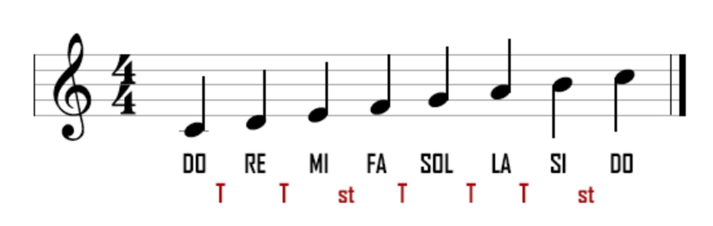
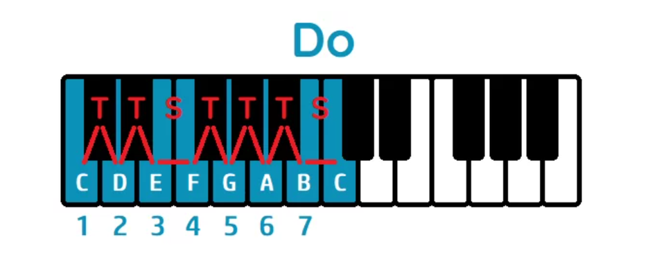

Saber en qué tonalidad está una canción es una de esas habilidades que parecen cosa de "oído absoluto" pero que en realidad son puro método. Te hace falta para tocar por encima de una canción, para buscar samples o loops que encajen entre sí, para transportar una idea a otra tonalidad, o simplemente para entender mejor lo que estás escuchando.
Este es el método que uso yo mismo y que enseño en la escuela: no hace falta partitura, ni saber solfeo de antemano, ni tener el oído entrenado durante años. Solo hace falta entender un patrón muy concreto y aplicarlo siempre igual.
Déjanos tu nombre y email y te desbloqueamos al momento el PDF con todo el método, para que lo guardes y lo repases cuando quieras.
Todo el método se apoya en un único patrón, el de la escala mayor, formada por esta secuencia de intervalos:
Tono – Tono – Semitono – Tono – Tono – Tono – Semitono
Este patrón se repite igual empieces desde la nota que empieces. Si te lo aprendes de memoria, puedes reconstruir cualquier escala mayor a partir de una sola nota — que es exactamente lo que vamos a usar para detectar la tonalidad de una canción.

La escala de Do mayor y su patrón de intervalos: T–T–S–T–T–T–S.

El mismo patrón visto en el teclado: fíjate en los dos semitonos, entre Mi–Fa y entre Si–Do (justo donde no hay tecla negra en medio).
Lo mejor para que esto termine de encajar es verlo aplicado sobre una canción real, nota a nota. Grabé un vídeo corto haciendo justo eso:
Con esto ya tienes un método fijo y repetible: nada de "tener buen oído" — solo el patrón T-T-S-T-T-T-S aplicado siempre de la misma forma. Practícalo con un par de canciones que te gusten y en poco tiempo lo harás casi de forma automática.
Esto y mucho más lo trabajamos con calma y en la práctica en la Escuela de Sonido de IRL Estudios.
Para más info escríbenos a nuestro mail: irlestudiosmadrid@gmail.com